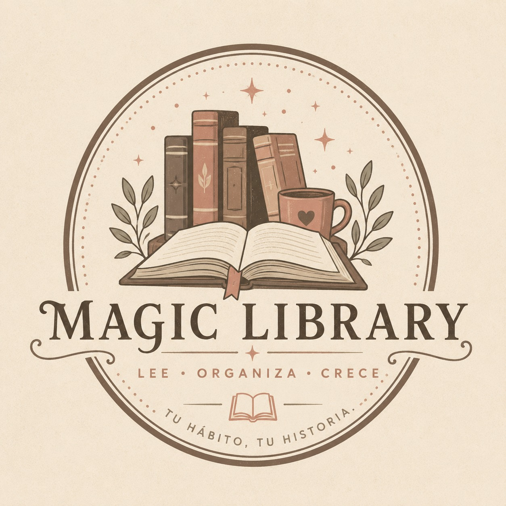

01 / PLATAFORMA & HÁBITOS
Magic Library
Plataforma web diseñada para ayudar a registrar y mantener el hábito de la lectura[cite: 3]. Implementa motor de metas en tiempo real, catálogo por estados y tareas en segundo plano con Background Services[cite: 3].